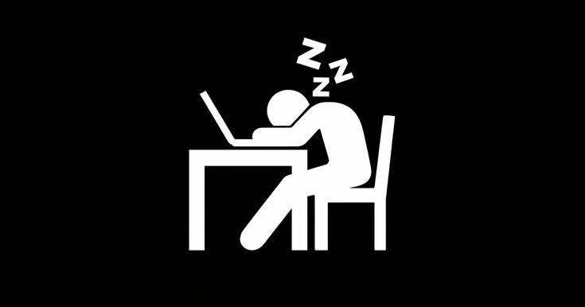

KirDev Studio
Мы — независимая хобби-студия. Пишем софт для ПК, полезных ботов для социальных сетей, мобильные приложения под Android и веб-сайты. Делаем это ради интереса и делимся с вами абсолютно бесплатно, без рекламы и подписок.

Что мы пишем
Создаем простые и эффективные решения для самых разных платформ. Только то, что нужно в повседневной жизни.
Софт для ПК
Утилиты для очистки системы, кликеры и автоматизаторы рутинных действий на Windows.
Боты для соцсетей
Умные боты для Telegram и VK, автоответчики, модераторы и парсеры диалогов.
Android-приложения
Легковесные мобильные утилиты и удобные приложения-компаньоны для смартфонов.
Сайты и веб-сервисы
Современные веб-страницы, панели управления и адаптивные информационные сайты.
Философия хобби
KirDev Studio — это не бизнес. У нас нет инвесторов, планов продаж и рекламы. Мы пишем код исключительно ради удовольствия, саморазвития и интереса.
Так как это наше хобби, весь софт распространяется абсолютно бесплатно и не содержит рекламы, скрытых подписок или систем сбора личных данных. Мы ценим вашу приватность и делаем программы, которыми пользуемся сами.